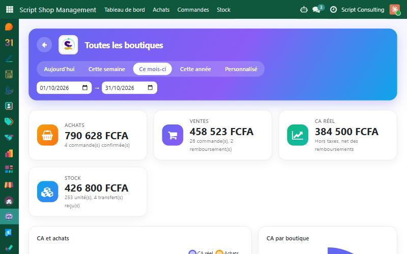
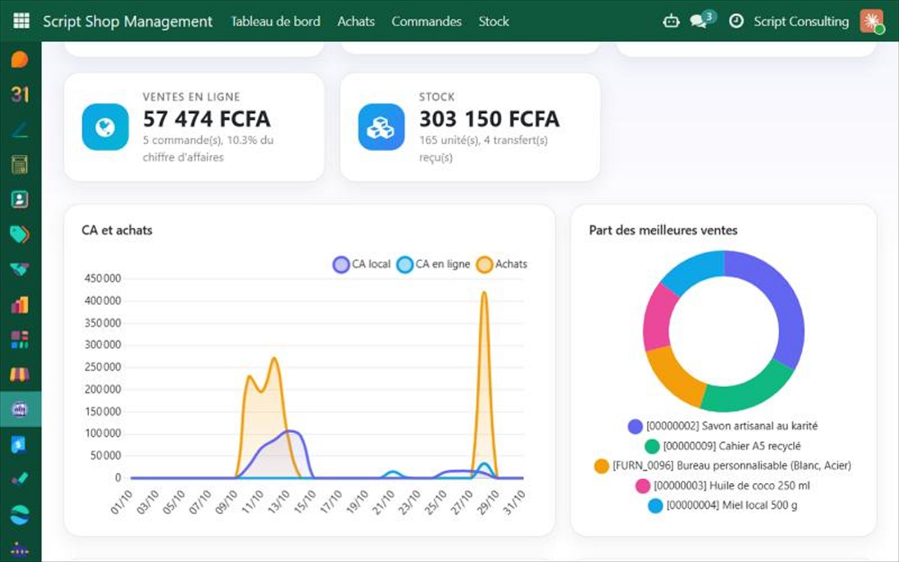
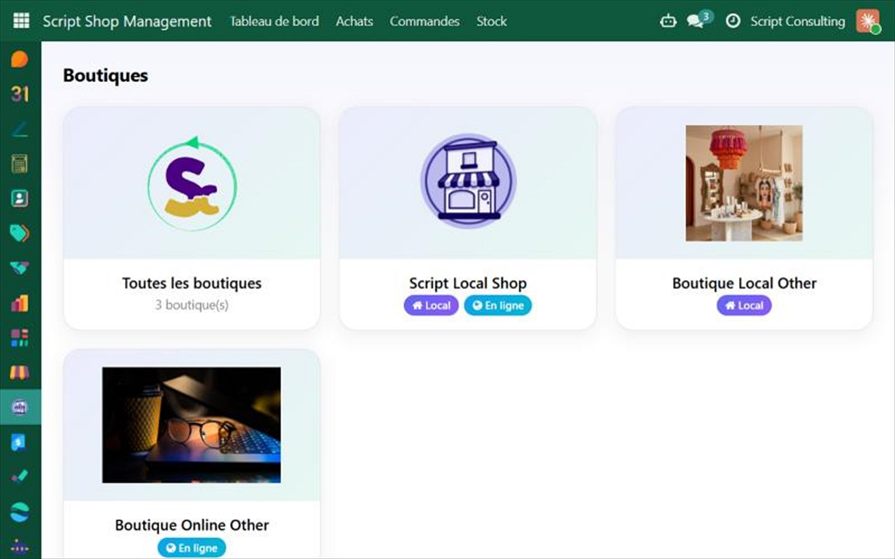
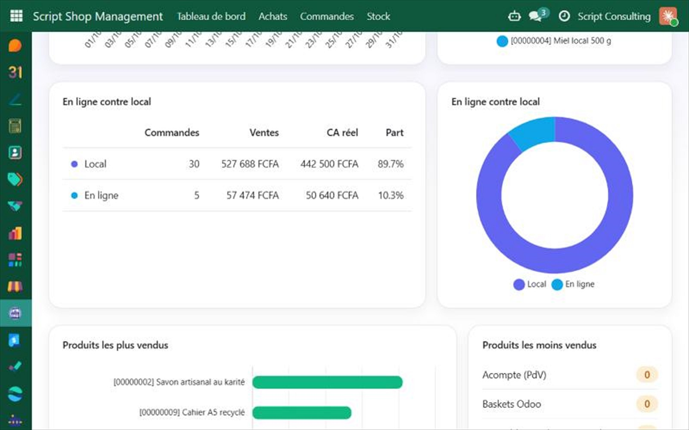
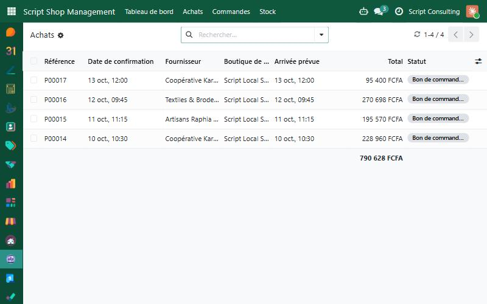
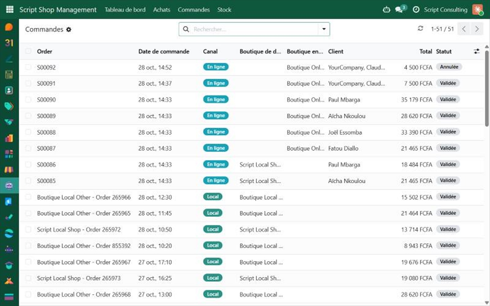

Script Shop Management
Run all your shops from a single Odoo application: local shops (Point of Sale) and online shops (website),
with their purchases, sales, stock and a modern dashboard.
Odoo 19.0 · Point of Sale · Purchase · Inventory · eCommerce · LGPL-3

What it does
Local and online shops
Tick Is a Shop on a Point of Sale or on a website. An online shop can be linked to a local shop (it shares its image, destination shop and stock) or run as a shop of its own, with its own warehouse created automatically.
The right products in the right shop
Choose in which shops each product is available. A cash register and an online shop only load and show the products assigned to them.
Destination shop everywhere
Purchase orders, online orders and stock transfers carry their shop, so you always know what is bought for, sold by and delivered from each shop.
A dashboard that reads at a glance
- One card per shop, plus a card for all the shops. Local and Online badges tell which kind of shop it is.
- Period selector: today, this week, this month, this year or custom dates.
- Indicators: purchases, local sales, real turnover (tax excluded), online sales and stock.
- Turnover and purchases curves, turnover by shop, best-selling and least-selling products.
- Online against local: orders, amount, real turnover and share of each channel.
- One click on an indicator opens the matching orders, purchases or stock, already filtered on the shop.



Shared stock, clear stock
- Shared stock: online orders leave from the warehouse of the website, which is the warehouse of the local shop when the website is linked. The availability shown on the website comes from that stock.
- Stock dashboard: your products as cards (image, shop, quantity, availability bar, reserved, available) with a status: in stock, low stock (below the reordering minimum) or out of stock. Switch to the list view when you prefer.
- Transfers: the history of every stock movement of the shops (receipts, deliveries, point of sale exits, inventory adjustments).
- One warehouse, one shop: a warehouse can only be the stock of a single shop, so every quantity is counted once.
Purchases, Orders and Stock per shop
Dedicated menus list only what concerns your shops. Orders gathers the point of sale orders and the website orders
in one list (channel Local or Online), with quick search by shop and by product.


Security and languages
- User group: sees the dashboard and the shop lists.
- Manager group: also sets up the shops (shop flag, image, products of each shop).
- Multi-company ready: a shop must belong to the company of the orders and transfers that use it.
- Available in English and French.
Getting started
- Install Script Shop Management (it needs Point of Sale, Purchase, Inventory and eCommerce with stock).
- Add your user to the Script Shop Management group (User or Manager).
- Open your Point of Sale configuration, tick Is a Shop and add an image. Give each shop its own warehouse.
- On your products, fill Available in Shops (and Available in Online Shops for websites that are not linked).
- On a website, tick Is a Shop and optionally choose the linked local shop.
- Open Script Shop Management › Dashboard.
Note: this app contains Python code, so it is not available on Odoo Online. Use Odoo.sh or an on-premise installation.
Version française
Pilotez toutes vos boutiques depuis une seule application Odoo : boutiques locales (point de vente) et boutiques en ligne (site web),
avec leurs achats, ventes, stock et un tableau de bord moderne.
- Boutiques locales et en ligne : cochez « Est une boutique » sur un point de vente ou sur un site web. Un site peut être lié à une boutique locale (image, boutique de destination et stock partagés) ou être une boutique à part entière, avec son propre entrepôt créé automatiquement.
- Produits par boutique : la caisse et la boutique en ligne ne chargent et n'affichent que les produits qui leur sont assignés.
- Boutique de destination sur les achats, les commandes en ligne et les transferts de stock.
- Tableau de bord : une carte par boutique et une carte « Toutes les boutiques », badges Local et En ligne, sélecteur de période, achats, ventes locales, CA réel, ventes en ligne, stock, courbes, produits les plus et les moins vendus, comparaison en ligne contre local. Un clic sur un indicateur ouvre les commandes, achats ou stock concernés.
- Stock partagé : les commandes en ligne sortent de l'entrepôt du site (celui de la boutique locale si le site est lié), et la disponibilité affichée sur le site vient de ce stock.
- Tableau de bord du stock : vos articles en cartes (image, boutique, quantité, barre de disponibilité, réservé, disponible) avec leur état : en stock, stock faible ou rupture. Vue liste disponible.
- Transferts : l'historique de tous les mouvements de stock des boutiques (réceptions, livraisons, sorties de caisse, ajustements d'inventaire).
- Un entrepôt, une boutique : un entrepôt ne peut être le stock que d'une seule boutique, chaque quantité est donc comptée une seule fois.
- Achats, Commandes et Stock : listes dédiées avec recherche rapide par boutique et par article ; le menu Commandes réunit les commandes de caisse et du site.
- Sécurité : groupes Utilisateur et Responsable, règles multi-sociétés. Disponible en français et en anglais.